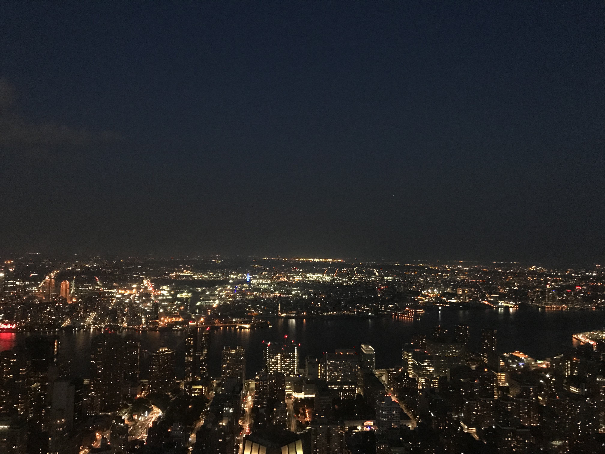

(이미지 클릭하면 더 자세히 알 수 있습니다.)
1. 북동부
미국 북동부는 뉴욕 주, 뉴저지 주, 뉴햄프셔 주, 버몬트 주, 로드아일랜드 주, 매사추세츠 주,
메인 주, 코네티컷 주, 펜실베니아 주를 포함합니다.
뚜렷한 4계절을 가지고있으며 경제의 중심지로 생활 수준이 높고 문화가 발달되어있습니다.
주요도시:
뉴욕,
필라델피아,
보스턴,
버팔로 등
|
보스턴
|
|
첫 번째 사진은 보스턴에 있는 항구 사진으로 이 앞에서 보스턴에서 유명한
duck tour을 시작합니다. Duck tour는 오리처럼 생긴 버스를 타고 육지와 바다를 달리며
보스턴에 대해 소개해주는 투어입니다.
두 번째 사진은 보스턴에 있는 공원으로 산책하기 좋습니다. 기념비도 있어 보스턴의
역사도 알 수 있고 보스턴을 한 눈에 볼 수 있습니다.
보스턴에는 MIT, 하버드 대학 등 여러 대학이 있어 교육이 활발한 도시로,
세 번째 사진은 하버드 대학의 사진입니다. 시간을 잘 맞춰 가면
학교를 돌아다니며 투어를 진행합니다.
이 외에도 프리덤 트레일, 파뉼 홀 마켓 플레이스 등 가볼 곳이 많은 도시입니다.
|
 |
|
|
뉴욕
|
|
뉴욕은 미국의 경제 도시로 볼 것이 매우 다양합니다.
첫 번째 사진은 타임스퀘어 광장의 사진으로 뉴욕의 밤이 낮보다 아름답다는 말을
체험할 수 있습니다. 각 회사를 대표하는 유명한 간판과 밤에도 꺼지지 않는
건물의 불이 합쳐져 저런 장면이 나오는 것 같습니다.
두 번째 사진은 자유의 여신상으로 뉴욕의 랜드마크라고 할 수 있습니다.
페리를 타고 들어가야하며 맨해턴의 스카이라인을 구경할 수 있고,
리버티섬에도 내릴 수 있습니다.
그 다음 사진은 뉴욕의 야경으로 엠파이어 빌딩 옥상입니다. 뉴욕은 밤에도 불이 꺼지지
않기 때문에 여러 장소에서 야경을 구경할 수 있습니다.
마지막 사진은 센트럴 파크로 도시 속의 쉼터입니다. 잠깐 쉬어가고 싶을 때 들리기 좋습니다.
이 외에도 여러 박물관, 뮤지컬을 볼 수 있는 브로드웨이 등 명소가 많습니다.
|
|
|  |
|
|
버팔로
|
|
나이아가라 폭포는 세계 3대 폭포에 들어갈 만큼 큰 폭포입니다.
미국과 캐나다에 걸쳐있어서 두 곳에서 보는 뷰가 달라 둘 다 가보는게 좋습니다.
다리를 건너 국경을 넘을 수 있고, 밤에는 조명을 비춰 낮과 또 다른 모습을 볼 수 있습니다.
|
|
|
2. 서부
|
로스앤젤레스
|
 |
LA에는 여러 볼 것들이 많습니다. 게티박물관, 헐리우드, 유니버셜 스튜디오 등이 있습니다.
낮에는 핑크월(폴 스미스 월)이라고 불리는 곳과 헐리우드, 유니버셜스튜디오, 게티박물관에 방문하면
좋고 저녁에는 그리피스 천문대에 들리는게 좋습니다.
|
|
|
샌프란시스코,
|
|
샌프란시스코에는
금문교
가 있습니다. 크루즈를 타고 금문교 주변과 앨커트래즈 섬을 볼 수 있습니다.
또한 물개들이 많아 유명해진 피어39, 롬바드 가 등 여러 관광지가 있습니다.
두 번째 사진에서 보이는 것 처럼 전차를 타고 샌프란시스코를 돌아다니는 경험을 할 수 있습니다.
|
|
|
시애틀
|
|
시애틀은 스타벅스 본점과 스타벅스 리저브를 보유하고 있습니다. 본점에서만 다른 지점과 달리
특별한 로고를 사용합니다. 또한 시애틀에는 올림픽 조각 공원, 스페이스 니들 등 여러 명소가 있습니다.
|
|
샌디에고
|
 |
샌디에고는 바다가 아름다운 도시로 여러 조형물과 해양 공원 등이 존재합니다.
또한 미드웨이 박물관이라고 미국의 항공모함을 전시해둔 박물관이 있습니다.
이 앞에는 세계 2차 대전 종점을 기념하여 세운 키스동상이 존재합니다.
|
|
|
라스베가스
|
|
라스베가스는 뜨거운 기온과 화려한 호텔로 유명합니다.
한 줄로 쭉 세워진 호텔은 라스베가스의 자랑입니다. 각 호텔마다 고유한 쇼가 존재하며,
카지노가 운영되어 새벽까지 화려한 조명이 유지됩니다.
또한 라스베가스에서 할 수 있는 일은 캐니언 투어입니다.
같은 주에 있는 곳은 아니지만 가장 가까워 접근이 용이합니다.
여러 캐니언 투어를 하면서 웅장한 대 자연을 느낄 수 있습니다.
|
|
|
3. 중부
미국 중부에는 일리노이, 인디애나, 로와, 캔사스, 미시간 등의 다양한 주가 속해있습니다.
이 지역은 계절 별로 기후차가 심하며 겨울에 눈이 많이 오는 것이 특징입니다.
주요도시:
시카고, 디트로이트, 시빌랜드, 세인트 루이스 등
4. 남부
미국 남부에는 사우스 애틀랜틱, 이스트 사우스 센트럴, 웨스트 사우스 센트럴 주가 있으며
가족 단위 문화가 중요시 되는 것이 특징입니다.
주요도시:
댈러스, 휴스톤,
워싱턴 DC,
마이애미, 애틀랜타 등
|
워싱턴DC
|
|
워싱턴은 미국의 수도로 백악관이 있고 그 주변에 여러 박물관이 줄지어 있습니다.
두 번째 사진에서 보이는 기념비는 미국 초대 대통령을 기리기 위해 세워진 것으로
미국에서 가장 오래되었고 유명한 국가적 자부심의 상징입니다.
|
|
[TOP]